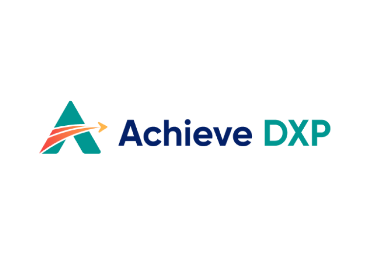

Find the grants.
Build the program.
Prove the outcomes.
A funding research and application-planning workspace for DOC education teams. Discover sources, build a shortlist, and prepare an evidence-backed proposal.
Match the right funding
Research federal, state, workforce, and philanthropic routes. See the evidence behind each match and identify when an eligible partner may need to lead.
Compose the program
GED, CTE, tablets, network, college pathways. Define your program scope, enter your agency’s budget, and gather evidence for each application. No vendor pricing is included.
Build a stronger application
Use source requirements, proposal working drafts, and cited eligibility evidence to build an application your team can substantiate.
One platform for every system an agency runs. One record for every learner — for life.
AchieveDXP integrates hundreds of systems — SIS, OMS, JMS, identity providers, learning content, secure delivery, monitoring — into a single fabric. Rostering and de-rostering sync automatically. Reporting maps to grant metrics. And the learner record follows the individual through transfers, through reentry, and into lifetime access to their transcripts, certifications, and diplomas. Education continues after release.
Education is the most-studied
recidivism intervention in corrections.
Grant reviewers don't reward promises. They reward outcomes tied to peer-reviewed evidence. AchieveDXP's program model anchors to the two most-cited studies in the field.
Reviewer-ready across every compliance framework federal grants demand.
AchieveDXP operates inside the full security and privacy envelope federal and state grant programs require. Independently validated, continuously monitored, with a real-time audit trail across every framework below — so when reviewers ask for proof, the answer is today's posture, not last quarter's.
Hardware, network, platform, partners — one contract vehicle.
Nucleos is an iT1 Company. Agencies procure the full stack under a single grant-compliant vehicle instead of negotiating five separate contracts across five vendors.

See your full funding stack in under five minutes.
Ten questions. A matched grant stack across five funding layers, a component-level program design, and a reviewer-ready narrative. No account, no email wall.
Corrections Education Grant Plan
A personalized funding and program strategy, built for your agency in under five minutes.
Saved in this browser
This checklist records preparation work your team confirms. It does not predict an award or establish eligibility.
Start from the funder’s scoring criteria. These editable-copy templates use your agency profile, selected activities, shortlist, and budget. Complete the evidence placeholders before internal review.
These are planning templates, not AI output or a guarantee of funding.
Choose a saved opportunity and prepare a source-backed brief. Copy it to an agency-approved assistant, or request an in-app analysis when your agency has enabled OpenAI. Nothing is sent to OpenAI until you choose Generate analysis.
Add evidence from the official notice
Paste public eligibility rules, scoring criteria, or requirements. Include the source URL and section or page. Excerpts stay in this session unless you export the brief or request analysis. Do not include personal, case, or confidential records.
A source synopsis is not the full application package. Verify AI output against the current notice, amendments, scoring criteria, and your agency’s evidence.
Analyze this opportunity
Generate analysis sends the displayed agency context, selected source, and any notice excerpt to OpenAI through this workspace’s server. Budget totals are included only if selected. Contact fields, budget notes, and private opportunity reviews are excluded. The access code stays in this browser session and is not included in exports.
Search source records across federal, state, workforce, and corporate categories. Coverage depends on connected sources; the directory below helps you research additional funding routes.
Add opportunities from official notices
Bring state, workforce, corporate, or federal opportunities into your plan. Copy facts from the official notice; leave missing information blank. Additions stay in this browser, appear in search, and can be shortlisted and reviewed. They are not independently verified by the Navigator.
Review each linked notice before saving. Imports do not update the public feed. Share links do not carry imported source text; export your plan to retain selected source records.
Your education goals may connect to adult education, career training, reentry, rural learning, and philanthropic programs. Use these pathways to identify the right funder, lead applicant, and evidence. Confirm current rules before pursuing a route.
Official research destinations, not a list of confirmed open grants. State routes appear below for your selected state. Corporate giving may require an eligible nonprofit or education partner.
Keep specific opportunities and program routes together. Research entries remain separate from verified source deadlines.
Record your team’s assessment for each specific opportunity. Cite the notice for every confirmed requirement, identify the lead applicant, and track the next action. Reviews stay in this browser and your exported plan; share links exclude them.
Save a specific opportunity to begin its review.
Explore potential roles and obtain evidence of capability. Confirm commitments and allowable costs with the funder. No supplier prices are listed.
Your program scope
Request a callback
A specialist will reach out within one business day.
Request received
A Nucleos specialist will reach you within one business day. Need to talk sooner? Call (877) 777-5995.